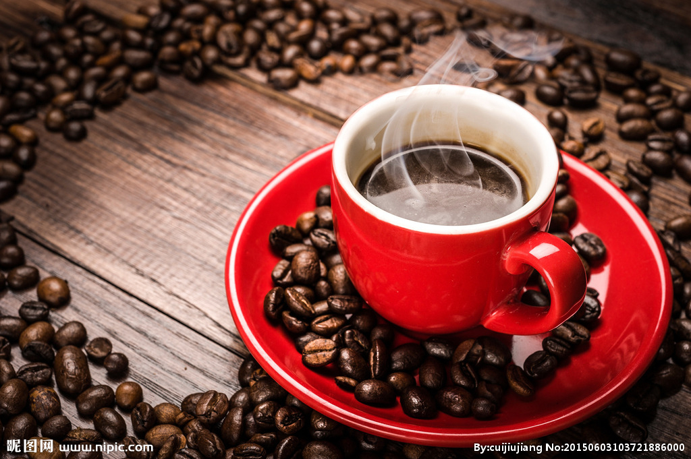
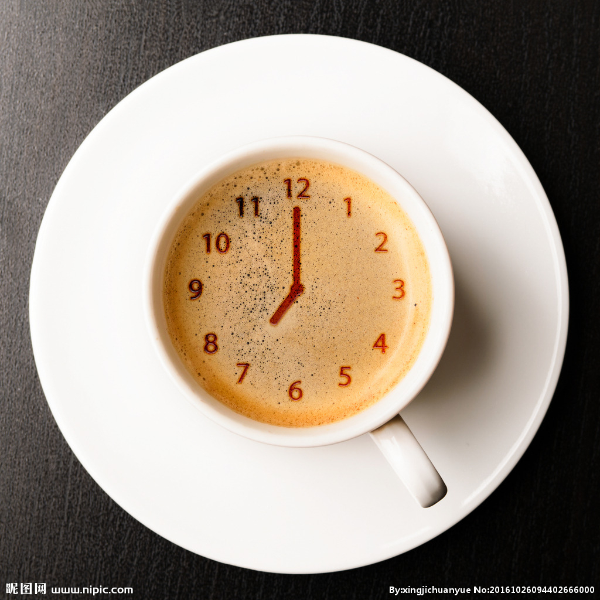
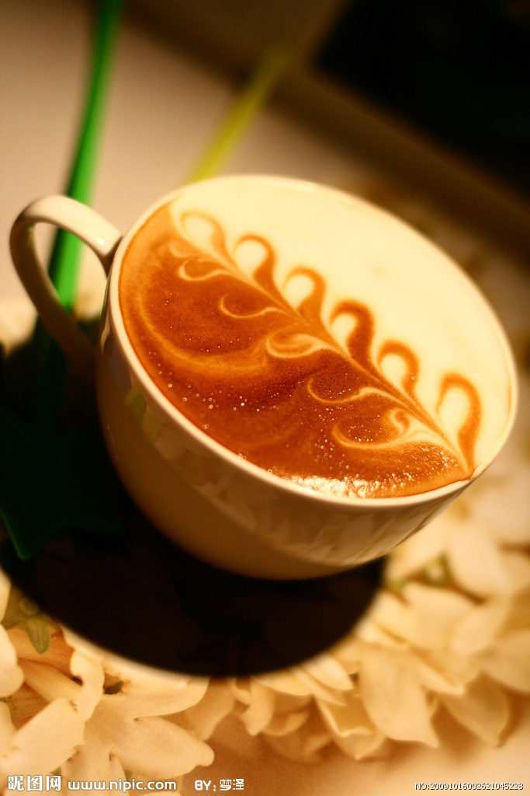
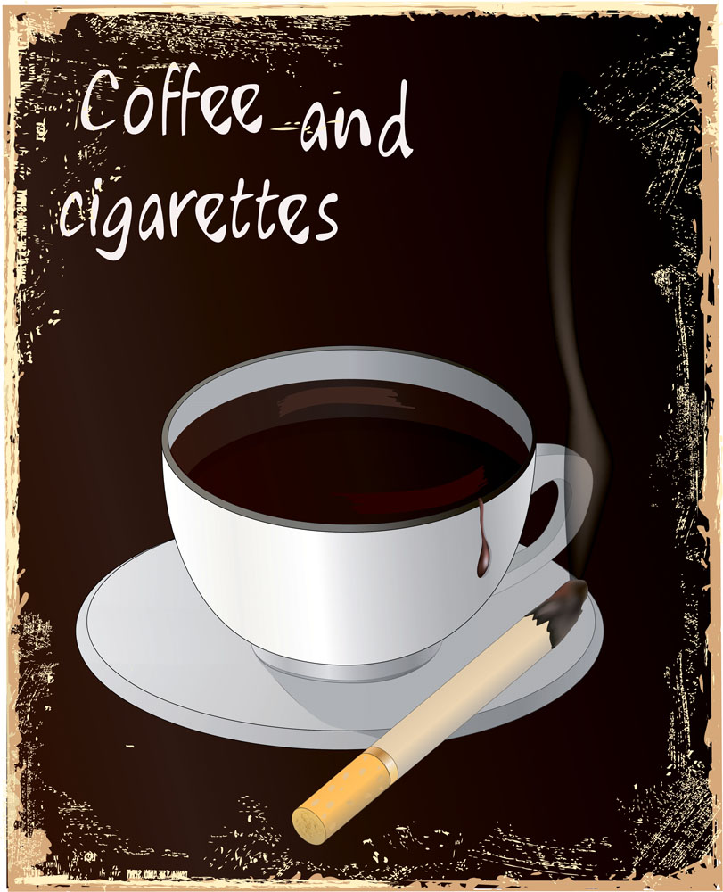
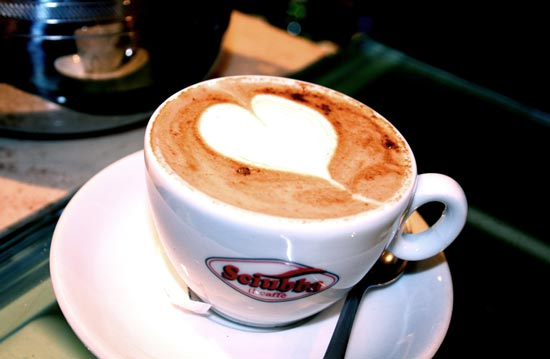

| 来杯咖啡吗？ | |||||||||||||
|---|---|---|---|---|---|---|---|---|---|---|---|---|---|
|
|||||||||||||
拿铁 拿铁咖啡是意大利浓缩咖啡(Espresso)与牛奶的经典混合，意大利人也很喜欢把拿铁作为早餐的饮料。意大利人早晨的厨房里，照得到阳光的炉子上通常会同时煮着咖啡和牛奶。 喝拿铁的意大利人，与其说他们喜欢意大利浓缩咖啡，不如说他们喜欢牛奶，也只有Espresso才能给普普通通的牛奶带来让人难以忘怀的味道。 |
|||||||||||||
卡布奇诺卡布奇诺分为干和湿两种。所谓干卡布奇诺(Dry Cappuccino)是指奶泡较多，牛奶较少的调理法，喝起来咖啡味浓过奶香， 适合重口味者饮用。至于湿卡布奇诺(Wet Cappuccino)则指奶泡较少，牛奶量较多的做法，奶香盖过浓呛的咖啡味，适合口味清淡者。 | |||||||||||||
奥瑞白卡布奇诺分为干和湿两种。所谓干卡布奇诺(Dry Cappuccino)是指奶泡较多，牛奶较少的调理法，喝起来咖啡味浓过奶香， 适合重口味者饮用。至于湿卡布奇诺(Wet Cappuccino)则指奶泡较少，牛奶量较多的做法，奶香盖过浓呛的咖啡味，适合口味清淡者。 | |||||||||||||
美式咖啡卡布奇诺分为干和湿两种。所谓干卡布奇诺(Dry Cappuccino)是指奶泡较多，牛奶较少的调理法，喝起来咖啡味浓过奶香， 适合重口味者饮用。至于湿卡布奇诺(Wet Cappuccino)则指奶泡较少，牛奶量较多的做法，奶香盖过浓呛的咖啡味，适合口味清淡者。 |
|||||||||||||
焦糖玛奇朵卡布奇诺分为干和湿两种。所谓干卡布奇诺(Dry Cappuccino)是指奶泡较多，牛奶较少的调理法，喝起来咖啡味浓过奶香， 适合重口味者饮用。至于湿卡布奇诺(Wet Cappuccino)则指奶泡较少，牛奶量较多的做法，奶香盖过浓呛的咖啡味，适合口味清淡者。 |
|||||||||||||
| 版权所有@303第二小可爱 | |||||||||||||